R112 — 영상과 웹, 같은 순간 나란히
왼쪽 = 영상 「오늘의 상식 26.11.24」(1920×1080에서 뽑음) · 가운데 = 웹 PC 1280×720(방장) · 오른쪽 = 웹 모바일 390(참가자). 웹 그림은 ui-check --sound 가 검사 DB 로 돈 판에서 찍었다(문항이 달라 글자는 다르다). 이 라운드는 화면을 한 줄도 바꾸지 않았다 — 아래 표에서 고르면 다음 라운드가 한다.
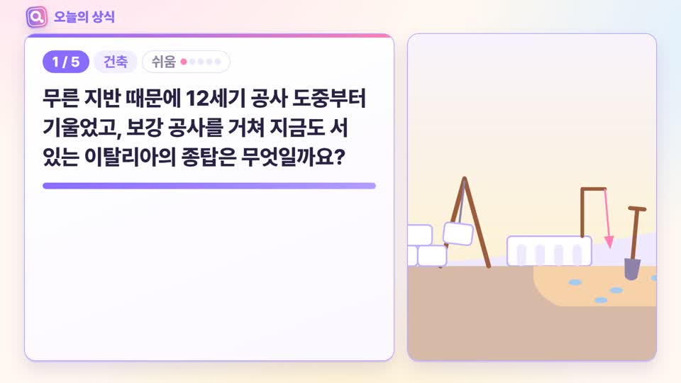
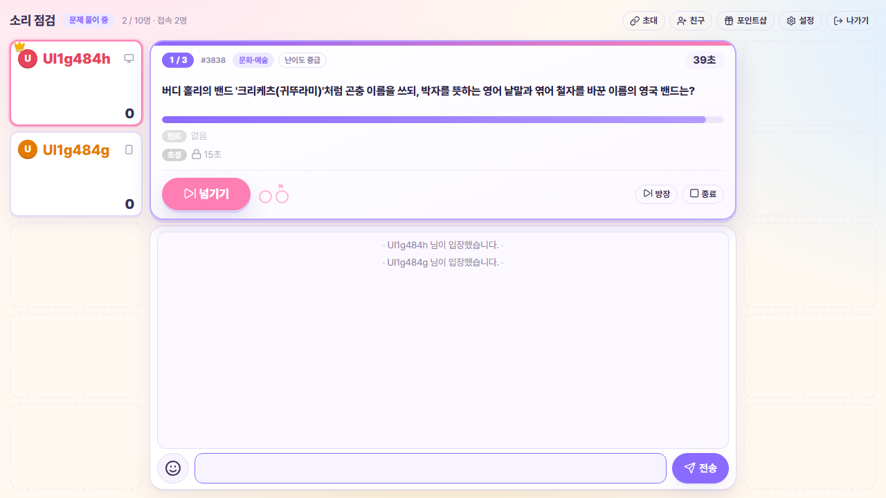
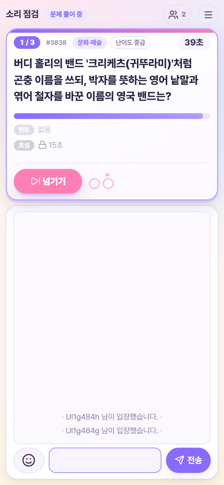
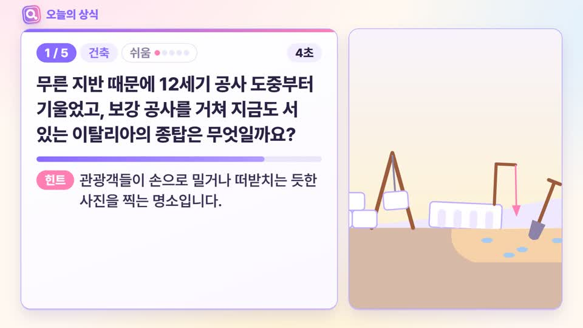
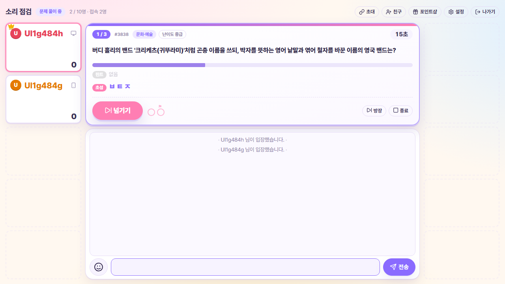
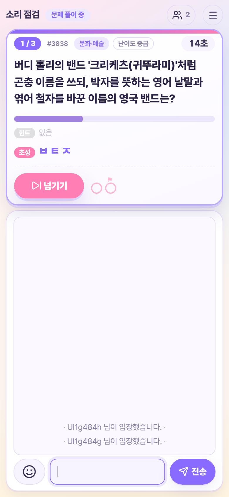
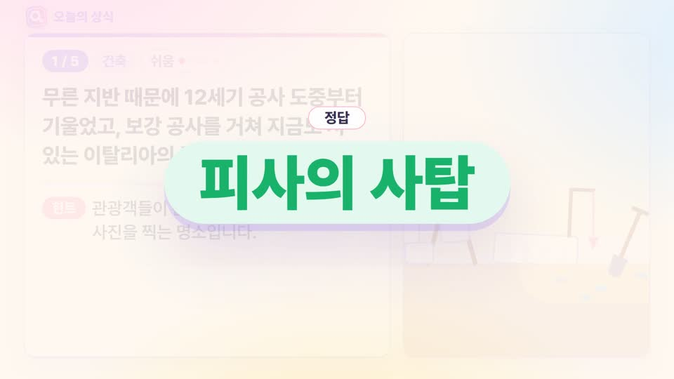
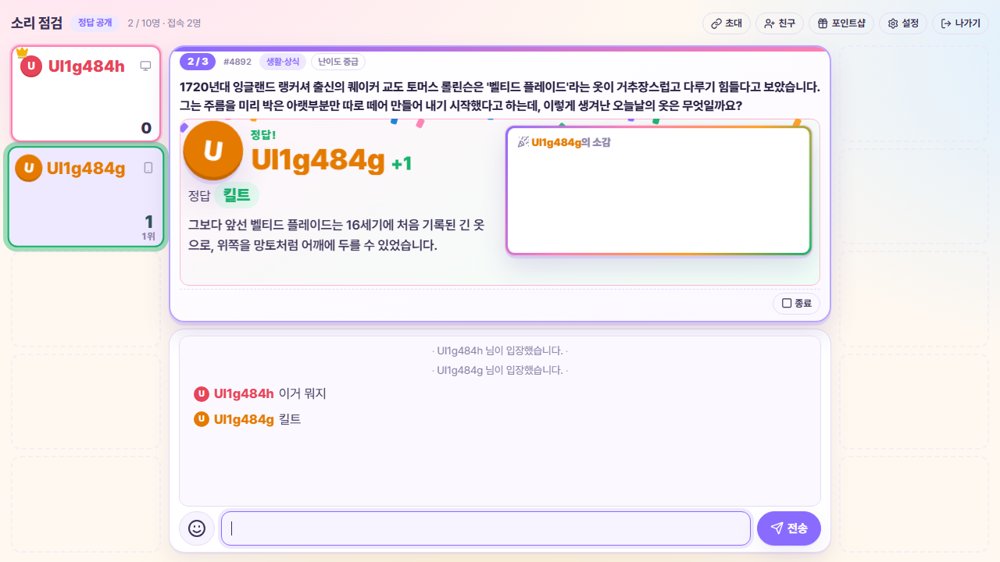
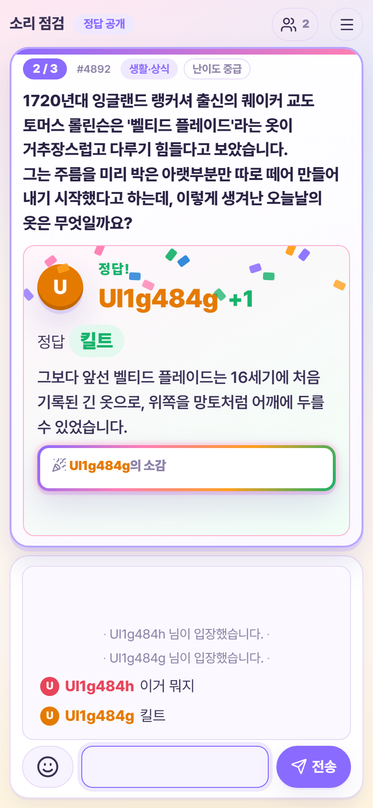
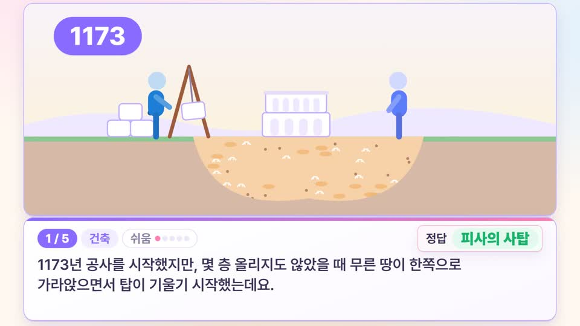
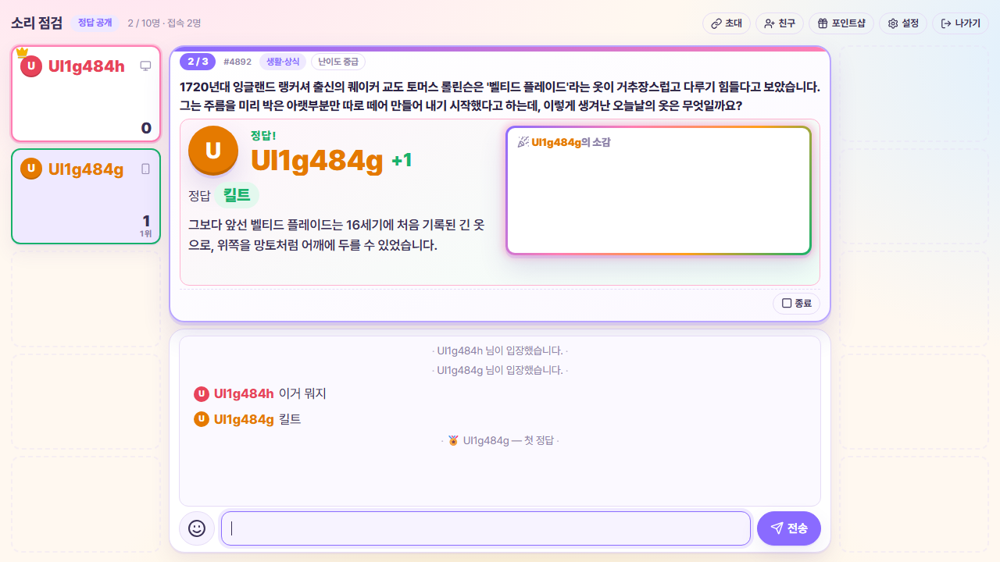
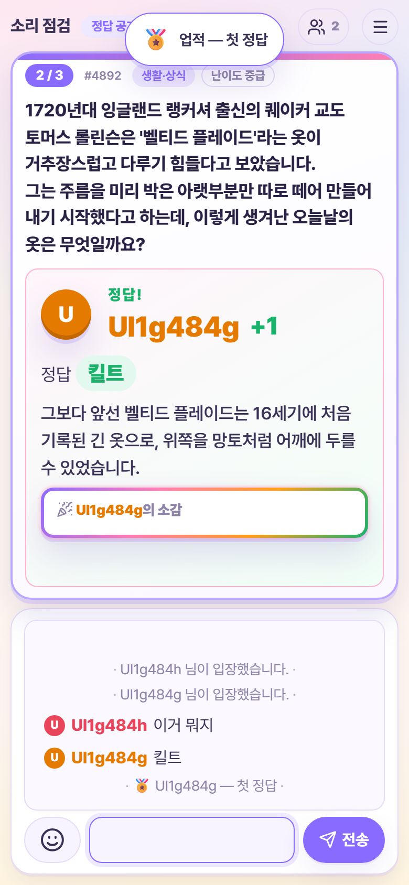
가. 토큰(색 · 둥글기 · 그림자) — 어긋난 것 없음
영상 brand/tokens.css 의 값 42개 중 41개가 웹 client/src/styles.css 파스텔 테마와 글자까지 같다. 다른 하나는 --font 목록 끝(영상 sans-serif · 웹 -apple-system …)뿐이라 보이는 차이는 없다. → 색을 맞출 일은 없다. 다른 것은 전부 "모양"이다.
나. 모양이 다른 것 — 찬종이 고를 표
| # | 자리 | 영상은 이렇다 | 웹은 이렇다 | 웹을 영상에 맞추면 얻는 것 | 잃는 것 | 크기 | |
|---|---|---|---|---|---|---|---|
| 1 | 난이도 표시 | 테두리 알약 안에 "쉬움" + 점 다섯(켜진 점은 분홍) | 테두리 알약 "난이도 중급"(글자만) | 영상에서 보던 점 표시를 게임에서 그대로 봄 · 한눈에 몇 단계인지 | 웹의 이 칸은 판 전체의 설정(초급 · 중급 · 고급 — 방장이 고른 것)이고, 영상의 점은 문제 하나의 난이도다. 뜻이 달라 그대로 옮기면 헷갈린다 — 문제별 난이도를 보여 줄지부터 정해야 함 | 작음 | |
| 2 | 남은 시간 알약 | 마지막 5초에만 오른쪽 위에 "4초" | 문제 내내 "15초" | 문제 동안 화면이 조용해짐 · 5초 삑과 함께 떠서 긴장감 | 남은 시간을 늘 보고 싶은 사람(채팅으로 답 치는 게임이라 시간이 중요) | 작음 | |
| 3 | 정답 공개 순간 | 화면 가운데 큰 초록 알약 "피사의 사탑" + 위에 작은 "정답" 딱지 · 뒤는 흐려짐(도장 찍듯) | 문제 카드 안 공개 칸: 정답자 얼굴 · "정답! 닉네임 +1" · "정답 [킬트]" 초록 칩 · 해설 | 영상과 가장 닮아 보이는 순간 · 정답 낱말이 크게 박힘 | 정답자 얼굴 · +1 · 소감 칸이 한 박자 늦게 보임(웹은 "누가 맞혔나"가 주인공) — 1초쯤 띄웠다 공개 칸으로 내려앉는 식이면 둘 다 살 수 있음 | 보통 | |
| 4 | "정답" 딱지(해설 중) | 분홍 테두리 알약 안에 "정답 | 피사의 사탑"(초록 칩) | 글자 "정답" 옆에 초록 칩(테두리 없음) | 정답 칸이 한 덩어리로 보임 · 영상과 같은 꼴 | 거의 없음(자리를 조금 더 씀) | 작음 | |
| 5 | 힌트 줄 | 분홍 "힌트" 딱지 + 문장 하나(글자 큼) · 힌트가 없으면 줄도 없음 | "힌트" · "초성" 두 줄이 늘 자리를 잡음 · 잠긴 줄은 회색 · 없으면 "없음" | 힌트 없는 문제에서 빈 줄이 사라져 깔끔 | 웹은 일반 힌트 · 초성 두 단계라 "곧 열린다"는 자리 표시가 사라짐 · 열릴 때 화면이 출렁일 수 있음 | 보통 | |
| 6 | 머리 줄의 문항 번호 | 없음 | "#3838"(누르면 복사 · 제보용) | 머리 줄이 짧아짐 | 제보할 때 문항 번호를 쉽게 못 찾음 — 맞추지 않기를 권함 | 작음 | |
| 7 | 로고 자리 | 왼쪽 위에 작은 로고 + "오늘의 상식" | 방 안에서는 방 이름 + 상태 칩(로고는 로비에만) | 방 안에서도 "퀴즈도장"이 보임 | 방 이름 자리를 나눠야 함 · 모바일 머리 줄이 좁음 | 보통 | |
| 8 | 문제 번호 알약 · 주제 칩 · 카드 위 띠 · 타이머 막대 | 같다(보라 알약 "1 / 5" · 연보라 칩 · 보라→분홍 띠 · 보라 막대) — 영상이 웹에서 옮긴 그대로 | 할 일 없음 | — | |||
그림 경로: docs/design/r112/ · v* = 영상 · w* = 웹. 웹 그림은 npm run ui-check:sound 가 돌 때마다 새로 찍힌다.